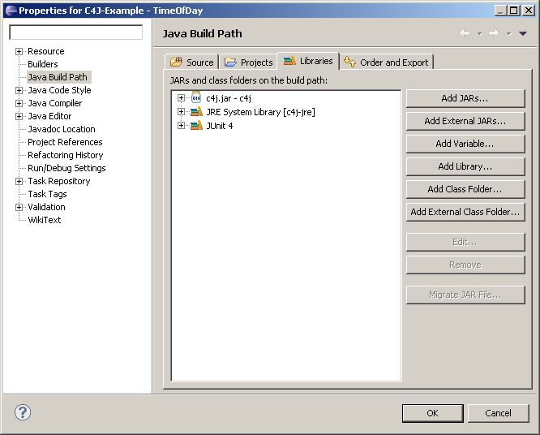

As mentioned previously, the -javaagent switch that was added to Java 1.5
is used to dynamically insert contract checking to your classes.
Running a C4J enabled application from the command line looks as below,
provided that your classpath contains the javassist.jar jar
and your test classes
(don't forget to enable assertions using the -ea switch):
java -ea -javaagent:../c4j/c4j.jar timeofday.TimeOfDayDemo
Using Eclipse JDT you can use the JRE Definition to specifiy a JRE with the name c4j-jre and the default VM arguments:
java -ea -javaagent:${project_loc:c4j}/c4j.jar
with $(project_loc:c4j} returning the absolute file system path of the c4j project, which could be downloaded from this website and imported into Eclipse. Just add the c4j.jar to your Java Build Path Libraries - and your are done. 